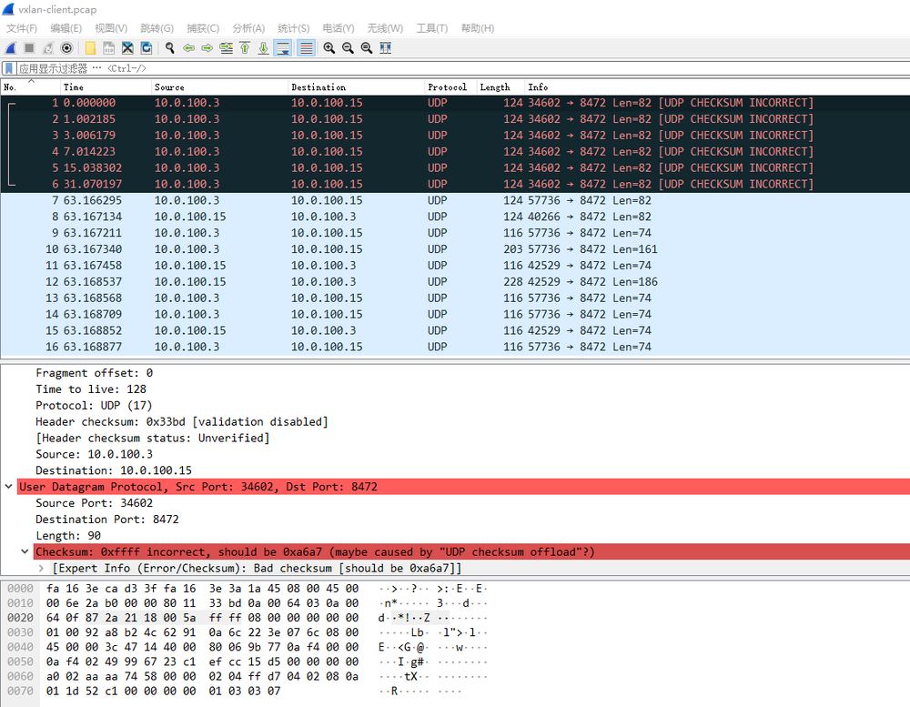

前言
这个问题 flannel 和 calico 的 VXLAN 模式下都会发生，部分人的集群的A记录 UDP 下查询可能有问题。原因是 v1.17+ 的 kubernetes 某部分会引起内核的某个 UDP 相关的 BUG 而不是 CNI 的软件层面， WEAVE 没有这个问题，原因后面会说到。写这篇文章的日期是05/28，最开始发现是上周五也就是05/23号，文章从时间线写起，因为很多时候想发文章但是没空。
由来
上周五我经过同事的工位看到同事的桌面是 kubectl get po 的输出，问他咋开始学 Kubernetes 了，他说跟着视频学下。看了下用的 kubeadm 部署了一套1.18.2的集群。1.18的 kube-proxy 的 ipvs 包的 parseIP 有 bug ，我推荐他换v1.17.5。他当时在部署一个入门的 SVC 实验，无法解析域名。使用dig命令排查了下，下面是对照:
dig @<podIP> +short kubernetes.default.svc.cluster.local能解析dig @10.96.0.10 +short kubernetes.default.svc.cluster.local超时
很多市面上的kubeadm部署教程都是直接命令 kubeadm init 的，所以我推荐同事去按照我文章的 kubeadm部署 一套后再试试，叫他用v1.17的最新版本v1.17.5，结果还是上面一样。 coredns 实际上还有 metrics 的 http 接口，从 http 层测了下：
curl -I 10.96.0.10:9153/metrics超时，很久之后才有返回curl -I <podIP>:9153/metrics能直接返回
涉及到本次排查的信息为：
$ kubectl get node -o wide
NAME STATUS ROLES AGE VERSION INTERNAL-IP EXTERNAL-IP OS-IMAGE KERNEL-VERSION CONTAINER-RUNTIME
master Ready master 7d8h v1.18.2 10.0.100.3 <none> CentOS Linux 7 (Core) 3.10.0-957.el7.x86_64 docker://19.3.8
node1 Ready <none> 7d7h v1.18.2 10.0.100.4 <none> CentOS Linux 7 (Core) 3.10.0-957.el7.x86_64 docker://19.3.8
node2 Ready <none> 7d7h v1.18.2 10.0.100.15 <none> CentOS Linux 7 (Core) 3.10.0-957.el7.x86_64 docker://19.3.8
$ kubectl get po -o wide -n kube-system -l k8s-app=kube-dns
NAME READY STATUS RESTARTS AGE IP NODE NOMINATED NODE READINESS GATES
coredns-546565776c-v5wwg 1/1 Running 2 25h 10.244.2.73 node2 <none> <none>
多次尝试发现很久的时间都是一样，用 time 命令观察了下一直是63秒返回。包括其他任何 SVC 都是这样。
$ time curl -I 10.96.0.10:9153/metrics
HTTP/1.1 200 OK
Content-Type: text/plain; version=0.0.4; charset=utf-8
Date: Wed, 25 May 2020 08:39:35 GMT
real 1m3.091s
user 0m0.002s
sys 0m0.007s
proxyMode 是 ipvs ，用 ipvsadm 看下超时的时候的状态，一直是SYN_RECV，也就是发送了 SYN ，没收到回包。
$ ipvsadm -lnc |& grep 9153
TCP 00:59 SYN_RECV 10.96.0.10:41282 10.96.0.10:9153 10.244.2.73:9153
抓包
因为 CNI 使用的 flannel ，用的 VXLAN 模式。master 上抓9153和flannel.1的 8472 端口，coredns 的 POD 所在 node 上抓 flannel 的 VXLAN 包，下面三个是对应的:
[root@master /root]# tcpdump -nn -i flannel.1 port 9153
tcpdump: verbose output suppressed, use -v or -vv for full protocol decode
listening on flannel.1, link-type EN10MB (Ethernet), capture size 262144 bytes
16:30:56.705696 IP 10.244.0.0.2201 > 10.244.2.73.9153: Flags [S], seq 911217171, win 43690, options [mss 65495,sackOK,TS val 17148909 ecr 0,nop,wscale 7], length 0
16:30:57.708489 IP 10.244.0.0.2201 > 10.244.2.73.9153: Flags [S], seq 911217171, win 43690, options [mss 65495,sackOK,TS val 17149912 ecr 0,nop,wscale 7], length 0
16:30:59.712458 IP 10.244.0.0.2201 > 10.244.2.73.9153: Flags [S], seq 911217171, win 43690, options [mss 65495,sackOK,TS val 17151916 ecr 0,nop,wscale 7], length 0
16:31:03.716441 IP 10.244.0.0.2201 > 10.244.2.73.9153: Flags [S], seq 911217171, win 43690, options [mss 65495,sackOK,TS val 17155920 ecr 0,nop,wscale 7], length 0
16:31:11.732562 IP 10.244.0.0.2201 > 10.244.2.73.9153: Flags [S], seq 911217171, win 43690, options [mss 65495,sackOK,TS val 17163936 ecr 0,nop,wscale 7], length 0
16:31:27.764498 IP 10.244.0.0.2201 > 10.244.2.73.9153: Flags [S], seq 911217171, win 43690, options [mss 65495,sackOK,TS val 17179968 ecr 0,nop,wscale 7], length 0
16:31:59.828493 IP 10.244.0.0.2201 > 10.244.2.73.9153: Flags [S], seq 911217171, win 43690, options [mss 65495,sackOK,TS val 17212032 ecr 0,nop,wscale 7], length 0
16:31:59.829565 IP 10.244.2.73.9153 > 10.244.0.0.2201: Flags [S.], seq 435819916, ack 911217172, win 27960, options [mss 1410,sackOK,TS val 17212067 ecr 17212032,nop,wscale 7], length 0
16:31:59.829611 IP 10.244.0.0.2201 > 10.244.2.73.9153: Flags [.], ack 1, win 342, options [nop,nop,TS val 17212033 ecr 17212067], length 0
16:31:59.829714 IP 10.244.0.0.2201 > 10.244.2.73.9153: Flags [P.], seq 1:88, ack 1, win 342, options [nop,nop,TS val 17212033 ecr 17212067], length 87
16:31:59.829897 IP 10.244.2.73.9153 > 10.244.0.0.2201: Flags [.], ack 88, win 219, options [nop,nop,TS val 17212067 ecr 17212033], length 0
16:31:59.831300 IP 10.244.2.73.9153 > 10.244.0.0.2201: Flags [P.], seq 1:113, ack 88, win 219, options [nop,nop,TS val 17212069 ecr 17212033], length 112
16:31:59.831322 IP 10.244.0.0.2201 > 10.244.2.73.9153: Flags [.], ack 113, win 342, options [nop,nop,TS val 17212034 ecr 17212069], length 0
16:31:59.831435 IP 10.244.0.0.2201 > 10.244.2.73.9153: Flags [F.], seq 88, ack 113, win 342, options [nop,nop,TS val 17212035 ecr 17212069], length 0
16:31:59.831633 IP 10.244.2.73.9153 > 10.244.0.0.2201: Flags [F.], seq 113, ack 89, win 219, options [nop,nop,TS val 17212069 ecr 17212035], length 0
16:31:59.831660 IP 10.244.0.0.2201 > 10.244.2.73.9153: Flags [.], ack 114, win 342, options [nop,nop,TS val 17212035 ecr 17212069], length 0
[root@master /root]# tcpdump -nn -i eth0 port 8472
tcpdump: verbose output suppressed, use -v or -vv for full protocol decode
listening on eth0, link-type EN10MB (Ethernet), capture size 262144 bytes
16:30:56.705718 IP 10.0.100.3.48683 > 10.0.100.15.8472: OTV, flags [I] (0x08), overlay 0, instance 1
IP 10.244.0.0.2201 > 10.244.2.73.9153: Flags [S], seq 911217171, win 43690, options [mss 65495,sackOK,TS val 17148909 ecr 0,nop,wscale 7], length 0
16:30:57.708523 IP 10.0.100.3.48683 > 10.0.100.15.8472: OTV, flags [I] (0x08), overlay 0, instance 1
IP 10.244.0.0.2201 > 10.244.2.73.9153: Flags [S], seq 911217171, win 43690, options [mss 65495,sackOK,TS val 17149912 ecr 0,nop,wscale 7], length 0
16:30:59.712478 IP 10.0.100.3.48683 > 10.0.100.15.8472: OTV, flags [I] (0x08), overlay 0, instance 1
IP 10.244.0.0.2201 > 10.244.2.73.9153: Flags [S], seq 911217171, win 43690, options [mss 65495,sackOK,TS val 17151916 ecr 0,nop,wscale 7], length 0
16:31:03.716452 IP 10.0.100.3.48683 > 10.0.100.15.8472: OTV, flags [I] (0x08), overlay 0, instance 1
IP 10.244.0.0.2201 > 10.244.2.73.9153: Flags [S], seq 911217171, win 43690, options [mss 65495,sackOK,TS val 17155920 ecr 0,nop,wscale 7], length 0
16:31:11.732590 IP 10.0.100.3.48683 > 10.0.100.15.8472: OTV, flags [I] (0x08), overlay 0, instance 1
IP 10.244.0.0.2201 > 10.244.2.73.9153: Flags [S], seq 911217171, win 43690, options [mss 65495,sackOK,TS val 17163936 ecr 0,nop,wscale 7], length 0
16:31:27.764513 IP 10.0.100.3.48683 > 10.0.100.15.8472: OTV, flags [I] (0x08), overlay 0, instance 1
IP 10.244.0.0.2201 > 10.244.2.73.9153: Flags [S], seq 911217171, win 43690, options [mss 65495,sackOK,TS val 17179968 ecr 0,nop,wscale 7], length 0
16:31:59.828541 IP 10.0.100.3.56618 > 10.0.100.15.8472: OTV, flags [I] (0x08), overlay 0, instance 1
IP 10.244.0.0.2201 > 10.244.2.73.9153: Flags [S], seq 911217171, win 43690, options [mss 65495,sackOK,TS val 17212032 ecr 0,nop,wscale 7], length 0
16:31:59.829521 IP 10.0.100.15.56771 > 10.0.100.3.8472: OTV, flags [I] (0x08), overlay 0, instance 1
IP 10.244.2.73.9153 > 10.244.0.0.2201: Flags [S.], seq 435819916, ack 911217172, win 27960, options [mss 1410,sackOK,TS val 17212067 ecr 17212032,nop,wscale 7], length 0
16:31:59.829617 IP 10.0.100.3.56618 > 10.0.100.15.8472: OTV, flags [I] (0x08), overlay 0, instance 1
IP 10.244.0.0.2201 > 10.244.2.73.9153: Flags [.], ack 1, win 342, options [nop,nop,TS val 17212033 ecr 17212067], length 0
16:31:59.829729 IP 10.0.100.3.56618 > 10.0.100.15.8472: OTV, flags [I] (0x08), overlay 0, instance 1
IP 10.244.0.0.2201 > 10.244.2.73.9153: Flags [P.], seq 1:88, ack 1, win 342, options [nop,nop,TS val 17212033 ecr 17212067], length 87
16:31:59.829883 IP 10.0.100.15.34571 > 10.0.100.3.8472: OTV, flags [I] (0x08), overlay 0, instance 1
IP 10.244.2.73.9153 > 10.244.0.0.2201: Flags [.], ack 88, win 219, options [nop,nop,TS val 17212067 ecr 17212033], length 0
16:31:59.831292 IP 10.0.100.15.34571 > 10.0.100.3.8472: OTV, flags [I] (0x08), overlay 0, instance 1
IP 10.244.2.73.9153 > 10.244.0.0.2201: Flags [P.], seq 1:113, ack 88, win 219, options [nop,nop,TS val 17212069 ecr 17212033], length 112
16:31:59.831327 IP 10.0.100.3.56618 > 10.0.100.15.8472: OTV, flags [I] (0x08), overlay 0, instance 1
IP 10.244.0.0.2201 > 10.244.2.73.9153: Flags [.], ack 113, win 342, options [nop,nop,TS val 17212034 ecr 17212069], length 0
16:31:59.831448 IP 10.0.100.3.56618 > 10.0.100.15.8472: OTV, flags [I] (0x08), overlay 0, instance 1
IP 10.244.0.0.2201 > 10.244.2.73.9153: Flags [F.], seq 88, ack 113, win 342, options [nop,nop,TS val 17212035 ecr 17212069], length 0
16:31:59.831612 IP 10.0.100.15.34571 > 10.0.100.3.8472: OTV, flags [I] (0x08), overlay 0, instance 1
IP 10.244.2.73.9153 > 10.244.0.0.2201: Flags [F.], seq 113, ack 89, win 219, options [nop,nop,TS val 17212069 ecr 17212035], length 0
16:31:59.831665 IP 10.0.100.3.56618 > 10.0.100.15.8472: OTV, flags [I] (0x08), overlay 0, instance 1
IP 10.244.0.0.2201 > 10.244.2.73.9153: Flags [.], ack 114, win 342, options [nop,nop,TS val 17212035 ecr 17212069], length 0
[root@node2 /root]# tcpdump -nn -i eth0 port 8472
tcpdump: verbose output suppressed, use -v or -vv for full protocol decode
listening on eth0, link-type EN10MB (Ethernet), capture size 262144 bytes
16:31:59.836137 IP 10.0.100.3.56618 > 10.0.100.15.8472: OTV, flags [I] (0x08), overlay 0, instance 1
IP 10.244.0.0.2201 > 10.244.2.73.9153: Flags [S], seq 911217171, win 43690, options [mss 65495,sackOK,TS val 17212032 ecr 0,nop,wscale 7], length 0
16:31:59.836328 IP 10.0.100.15.56771 > 10.0.100.3.8472: OTV, flags [I] (0x08), overlay 0, instance 1
IP 10.244.2.73.9153 > 10.244.0.0.2201: Flags [S.], seq 435819916, ack 911217172, win 27960, options [mss 1410,sackOK,TS val 17212067 ecr 17212032,nop,wscale 7], length 0
16:31:59.836811 IP 10.0.100.3.56618 > 10.0.100.15.8472: OTV, flags [I] (0x08), overlay 0, instance 1
IP 10.244.0.0.2201 > 10.244.2.73.9153: Flags [.], ack 1, win 342, options [nop,nop,TS val 17212033 ecr 17212067], length 0
16:31:59.836910 IP 10.0.100.3.56618 > 10.0.100.15.8472: OTV, flags [I] (0x08), overlay 0, instance 1
IP 10.244.0.0.2201 > 10.244.2.73.9153: Flags [P.], seq 1:88, ack 1, win 342, options [nop,nop,TS val 17212033 ecr 17212067], length 87
16:31:59.836951 IP 10.0.100.15.34571 > 10.0.100.3.8472: OTV, flags [I] (0x08), overlay 0, instance 1
IP 10.244.2.73.9153 > 10.244.0.0.2201: Flags [.], ack 88, win 219, options [nop,nop,TS val 17212067 ecr 17212033], length 0
16:31:59.838385 IP 10.0.100.15.34571 > 10.0.100.3.8472: OTV, flags [I] (0x08), overlay 0, instance 1
IP 10.244.2.73.9153 > 10.244.0.0.2201: Flags [P.], seq 1:113, ack 88, win 219, options [nop,nop,TS val 17212069 ecr 17212033], length 112
16:31:59.838522 IP 10.0.100.3.56618 > 10.0.100.15.8472: OTV, flags [I] (0x08), overlay 0, instance 1
IP 10.244.0.0.2201 > 10.244.2.73.9153: Flags [.], ack 113, win 342, options [nop,nop,TS val 17212034 ecr 17212069], length 0
16:31:59.838621 IP 10.0.100.3.56618 > 10.0.100.15.8472: OTV, flags [I] (0x08), overlay 0, instance 1
IP 10.244.0.0.2201 > 10.244.2.73.9153: Flags [F.], seq 88, ack 113, win 342, options [nop,nop,TS val 17212035 ecr 17212069], length 0
16:31:59.838703 IP 10.0.100.15.34571 > 10.0.100.3.8472: OTV, flags [I] (0x08), overlay 0, instance 1
IP 10.244.2.73.9153 > 10.244.0.0.2201: Flags [F.], seq 113, ack 89, win 219, options [nop,nop,TS val 17212069 ecr 17212035], length 0
16:31:59.838836 IP 10.0.100.3.56618 > 10.0.100.15.8472: OTV, flags [I] (0x08), overlay 0, instance 1
IP 10.244.0.0.2201 > 10.244.2.73.9153: Flags [.], ack 114, win 342, options [nop,nop,TS val 17212035 ecr 17212069], length 0
先看上面的第一部分，搜了下资料，得知 TCP 默认 SYN 报文最大 retry 5次，每次超时了翻倍，1s -> 3s -> 7s -> 15s -> 31s -> 63s。只有63秒的时候 node 的机器上才收到了 VXLAN 的报文。说明 POD 所在 node 压根没收到63秒之前的。
一般 LVS 的 dr 模式下 TCP 的时间戳混乱或者其他几个 ARP 的内核参数不对下 SYN 是一直收不到的而不是63秒后有结果，所以和内核相关参数无关。于是同样上面的步骤 tcpdump 抓包，加上-w filename.pcap选项把抓的包导出下来导入到 wireshark 里准备看看。
报文分析
9153的包 wireshark 里看63秒前面都是 TCP 的 SYN 重传，看到了 master 上向外发送的 VXLAN 报文的时候有了发现。
可以看到 UDP 的 checksum 是0xffff，我对 UDP 报文不太熟悉， UDP 的 header 的 Checksum 没记错的话CRC32校验的，不可能是这种两个字节都置1的 0xffff ，明显就是 UDP 的 header 的校验出错了。后面几个正常包的 Checksum 都是 missing 的。
wireshark 的编辑->首选项->Protocols->UDP->Validate the UDP checksum if possible 勾上更直观看。

不是根本的解决方法
搜了下wireshark linux udp checksum incorrect，都是推荐把 Checksum Offload disable 掉就行了，例如我这里是 flannel ，则是：
$ /sbin/ethtool -K flannel.1 tx-checksum-ip-generic off
Actual changes:
tx-checksumming: off
tx-checksum-ip-generic: off
tcp-segmentation-offload: off
tx-tcp-segmentation: off [requested on]
tx-tcp-ecn-segmentation: off [requested on]
tx-tcp6-segmentation: off [requested on]
tx-tcp-mangleid-segmentation: off [requested on]
udp-fragmentation-offload: off [requested on]
再测下正常，而 WEAVE 他们也用的 VXLAN 模式，但是他们在创建网卡的时候把这个已经 off 掉了，所以 WEAVE 的 VXLAN 模式在v1.17+集群没出现这个问题。
$ time curl -I 10.96.0.10:9153
HTTP/1.1 404 Not Found
Content-Type: text/plain; charset=utf-8
X-Content-Type-Options: nosniff
Date: Wed, 27 May 2020 02:14:04 GMT
Content-Length: 19
real 0m0.009s
user 0m0.005s
sys 0m0.003s
你以为这样就完了？其实并没有，因为我自己维护了一套 ansible 部署 kubernetes 的方案，每次新版本发布我都会实际测下。并且同事反映了他同样云主机开出来用我 ansible 部署v1.17.5没有这个问题。这就很奇怪了，原因后面说，请接着继续看。
什么是checksum offload
Checksum Offload 是网卡的一个功能选项。如果该选项开启，则网卡层面会计算需要发送或者接收到的消息的校验和，从而节省 CPU 的计算开销。此时，在需要发送的消息到达网卡前，系统会在报头的校验和字段填充一个随机值。但是，尽管校验和卸载能够降低 CPU 的计算开销，但受到计算能力的限制，某些环境下的一些网络卡计算速度不如主频超过 400MHz 的 CPU 快。
正文
对照组
很奇怪的就是为啥就是我的 ansible 部署的二进制就正常没这个问题，而 kubeadm 部署的就不正常，后面我花时间整了以下几个对照组(期间同事也帮我做了几个条件下的测试，但是不是系统用错了就是版本整错了。。。)，终于找到了问题的范围，下面是我自己统计的对照组信息， kubeadm 和 ansible 版本均为1.17.5测试。os 不重要，因为最终排查出和 os 无关：
| os | type(kubeadm or ansible) | flannel version | flannel is running in pod? | will 63 sec delay? |
|---|---|---|---|---|
| 7.6 | kubeadm | v0.11.0 | yes | yes |
| 7.6 | kubeadm | v0.12.0 | yes | yes |
| 7.6 | kubeadm | v0.11.0 | no | yes |
| 7.6 | kubeadm | v0.12.0 | no | yes |
| 7.6 | ansible | v0.11.0 | yes | no |
| 7.6 | ansible | v0.12.0 | yes | no |
| 7.6 | ansible | v0.11.0 | no | no |
| 7.6 | ansible | v0.12.0 | no | no |
这就看起来很迷了。但是排查出和 flannel 无关，感觉 kube-proxy 有关系，然后今天05/28针对 kube-proxy 做了个对照组：
| os | type(kubeadm or ansible) | kube-proxy version | kube-proxy is running in pod? | will 63 sec delay? |
|---|---|---|---|---|
| 7.6 | kubeadm | v1.17.5 | yes | yes |
| 7.6 | kubeadm | v1.17.5 | no | no |
| 7.6 | kubeadm | v1.16.9 | yes | no |
| 7.6 | kubeadm | v1.16.9 | no | no |
| 7.6 | ansible | v1.17.5 | yes | yes |
| 7.6 | ansible | v1.17.5 | no | no |
可以看出就是1.17以上的 kube-proxy 如果使用 POD 则会有这个问题，而非 POD 则不会， 在github 上 compare 了下v1.17.0和v1.16.3。
发现了 Dockerfile的改动 ， 1.17.0里的 Dockerfile 的BASEIMAGE是用 指定了一个源安装了最新的iptables，然后利用update-alternatives把脚本/usr/sbin/iptables-wrapper去替代iptables 来检测应该使用nft还是legacy， hack 下镜像回自带源里的 iptables 验证下。
FROM registry.aliyuncs.com/google_containers/kube-proxy:v1.17.5
RUN rm -f /usr/sbin/iptables &&
clean-install iptables
构建的镜像推送到了 dockerhub 上zhangguanzhang/hack-kube-proxy:v1.17.5，更改下集群 kube-proxy ds 的镜像。
$ kubectl -n kube-system get ds kube-proxy -o yaml | grep image:
image: zhangguanzhang/hack-kube-proxy:v1.17.5
测试访问成功。
$ time curl -I 10.96.0.10:9153
HTTP/1.1 404 Not Found
Content-Type: text/plain; charset=utf-8
X-Content-Type-Options: nosniff
Date: Thu, 28 May 2020 04:47:21 GMT
Content-Length: 19
real 0m0.008s
user 0m0.003s
sys 0m0.003s
对于这个问题我在 flannel 的 pr 下面也参与了回复，同时在官方 github 上提了一个 issue。
这个问题的触发是由于v1.17+的 kube-proxy 的 docker 镜像里安装了最新的 iptables ， --random-fully选项会触发内核vxlan的bug。
总结
目前解决问题三种办法:
- 关闭 CNI 的 VXLAN 网卡的
checksum offload - 更改 Docker 镜像
- 升级到新内核，具体版本就不知道了，只要在这个 内核pr 合并后出的内核版本都行，有人说这些可以
Stable kernels 5.6.13, 5.4.41, 4.19.123, 4.14.181 and later have the checksum patch included.